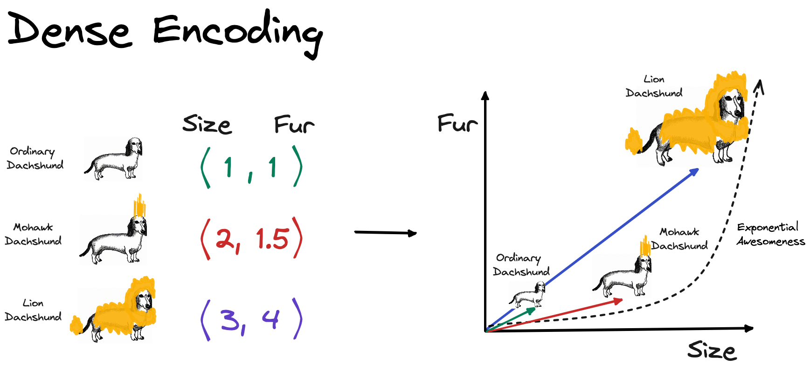
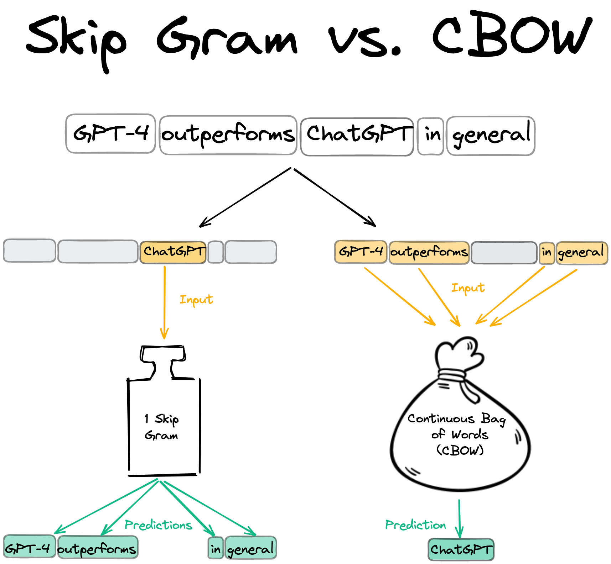

Intro
Word2Vec is one of the most well-known word embedding algorithms. Although it has been succeeded in efficacy by more recent transformer-based algorithms like BERT and GPT, Word2Vec remains a valuable algorithm to understand. It was the first algorithm to produce word embeddings that captured both syntactic and semantic relationships between words, famously demonstrated by the “king - man + woman = queen” analogy. This made a profound contribution to natural language processing and kicked off a swath of impressive developments. In this post, we will take a deep dive into the nuts and bolts of Word2Vec. But before we do that, let’s first review why word embeddings are crucial for NLP tasks.
Word embeddings
Word embeddings (also called as vectors or representations) are high-dimensional (usually 50-1000 dimensions) dense vectors with which you can do all kinds of arithmetics and most importantly encode similarity. When you hear vector arithmetics think of the famous example “king – man + woman = queen” or “good - best + bad = worst”. These two examples illustrate how semantic (meaning) and syntactic (grammar) similarities are encoded in the word vectors.
The motivating idea behind word embeddings is the concept of representing a word based on its usual context (also known as distributional semantics). This idea was popularized by a linguist, J. R. Firth, with his famous quote “You shall know a word by the company it keeps” in the 1950s. “The basic idea can be summed up in the so-called distributional hypothesis: linguistic items with similar distributions have similar meanings.”
What is a reasonable alternative to dense word representations? One-hot-encoding (OHE) might first come to your mind which was the way to go in traditional NLP. When using OHE, you basically treat words as discrete, atomic symbols. This way of representing words is usually refered to as sparse, in contrast to dense, distributed representation (like Word2Vec).
Let’s look at a toy example to illustrate the differences better. Let’s say I want to represent the words: “Ordinary Dachshund”, “Mohawk Dachshund” and “Lion Dachshund”. Using sparse, OHE representation, we would end up with the below word vectors. The individual words have their own dedicated dimension and if you were to calculate similarity between of these words vectors e.g. dot product, you end up with 0.

Let’s see how we could represent these words in a dense way. How about we define 2 dimensions that are suitable to capture the meaning of these words to some extent. I think the body size (x-axis) and the amount of fur (y-axis) are good candidates for our goal. Below you can see my estimation of the word vectors.

Here is how the word vectors compare to each other. For the dense representation, distributed, representation only 2 dimensions are used in contrast to the 3 dimensions using sparse, OHE representation. In my opinion, this toy example illustrates how dense vectors capture meaning. Using the very simple distance metric, the taxicab distance (also known as L1 and Manhattan distance), we can clearly see that an “Ordinary Dachshund” is more similar to “Mohawk Dachshund” than to a “Lion Dachshund” because the distance between the two is smaller. Using sparse representation, you would be not able to calculate different degrees of similarity. All sparse vectors would have 0 similarity because the vectors are orthogonal to each other.
NOTE: though in this toy example, the dimensions of the dense vectors have a direct interpretation (body and fur size), this is not the case in a real application. There are papers attempting to interpret word vector dimensions in one way or another. For example, in [7] they attempted to extract the ‘gender’ dimension (and debias the word vectors, more about this in section ‘Other Notes’)
Back to the question of why we care about (good) word embeddings. We can not only decrease the dimensionality of the representation which may have a desirable regularization effect but we can do it in a way that let’s us compare them and calculate similarities. This way of encoding information seems a lot mor informative than the sparse one!
Intuitively, it just makes sense that any downstream application (chatbots, named entity recognition, text summarization) would prefer making use of this information. Isn’t this fascinating? We have assessed the importance of word vectors, now let’s say how to make one!
The Word2Vec algorithm
In summary, Word2Vec beat all previous benchmarks and managed to cut down the on training time vastly which allowed the authors to train on a larger corpus than it was possible before. They used the Google News, a Google proprietary, dataset which contains ca. 6B tokens and has a vocabulary size of 3M. For reference, the Oxford English Dictionary contains over 600,000 words and Phrases [4]. What comes to my surprise is that only a few epochs are needed to train the model. In the paper they used 1-3 epochs. Probably this is enough because the 6B token long dataset containts ca. 6B samples which is quite a number. FUN FACT: Word2Vec was originally implemented on CPUs. It was 2013 and GPUs were already on their way revolutionizing AI but still a year after the seminal paper of Krizhevsky et. al. I guess there were strong reasons why they did all this on CPUs. At this point, I think it is important to note that Word2Vec was first introduced in [1] and then further developed in [2].
To put it in a sentence:
Word2Vec is an unsupervised pre-training algorithm that utilizes neural networks to produce word embeddings from a vast corpus of text data, which can be leveraged as input features for a wide range of natural language processing tasks.
This is quite a dense description which is worth elaborating in more detail.
- It is important to highlight that Word2Vec is an NN-based algorithm because around the time of its publication there were other, non-NN-based algorithms like count-based methods e.g. co-occurence matrix factorization methods and GloVe [9].
- It is a pre-training algorithm because its resulting word embeddings is mostly used for downstream NLP tasks where these embeddings are either frozen or jointly optimzied in the downstream task.
- It is also unsupervised which means that no human supervision like labels are being used during training. The supervision comes from the data itself i.e. how words follow each other.
The success of Word2Vec was based on multiple innovations:
- Two new training algorithms:
- Continous Bag-Of-Word (CBOW)
- Skip-Gram
- Two tricks optimizing computational efficiency
- Negative Sampling
- Hierarchical Softmax
Here, I am using a somewhat sloppy description because strictly speaking Negative Sampling and Hierarchical Softmax are also part of the training algorithm. I just refer to them as “computational tricks” because, to me, they do not really deal with high-level concepts like how to relate context to a specific (center) word but more about the nuanced implementation details of the loss function. As this post progresses this taxonomy will hopefully make sense.
First, let’s review the easier of the two training algorithms, CBOW.
Continous Bag-of-Words (CBOW)
In both CBOW and Skip-Gram, we differentiate between center and context words. The context words around the center word are limited by a context window, which was exactly 4 in the paper. This means that there are 4 context words preceeding (history) and 4 (future) following the center word. The choice of this parameter was not explained in the paper and one might actually want to tune it.
Let’s look at a specific example but instead of using 4, let’s use a context window of 2 words. Here, the center Word “ChatGPT” is surrounded by the context words “GPT-4”, “outperforms”, “in”, “general”.
The difference between CBOW and Skip-Gram is what we actually want to predict. While CBOW uses the context words to predict the center word, Skip-Gram does the opposite and predicts the context words from the center word.

By now, we have a good high-level overview of Word2Vec. It is time to move to the technical implementation of CBOW. We will first look at the trainable weight matrices and an illustrative forward and backward pass. Later, we will interpret the more math-heavy part, the loss function.
Illustrated Forward and Backward Pass
There are 2 trainable weight matrices: the input and output matrix.
- N denotes the number of embedding dimensions,
- V the vocabulary size.
N is usually 50-300 and V in the Google News Dataset, as mentioned before, 3M.
The input weight matrix is tasked with generating the input embedding for the task, while the output matrix will produce the predictions i.e. probability distribution over the entire vocabulary. This will make more sense in a bit. For now what is crucial to understand, is that each token has an embedding in the input word matrix. This will be its context embedding. Additionally each token has an embedding in the output word matrix which is its center embedding. In other words, each word has 2 embeddings. The tokens in the Vocabulary need to be mapped to indices, so we can look up their embeddings in the input or output matrices using indexing.
FUN FACT: Zyzzyva is an actual word and refers to a type of weevils. I looked up on Google what is the last item in English dictionaries.
Let’s put all we know together by illustrating the forward and backward pass! Below, we use the same example of center and context words.
- Using the token-index mapping, we look up the indices of the center and context words.
- The 4 context words are taken from the input matrix and stacked horizontally.
- To get the average context, we take the row-wise average of the context word embeddings.
- Using the output (center) matrix, we calculate the dot product between each word in the vocabulary and the averaged context embedding. This is a matrix-vector multiplication. In the resulting score vector each item refers to the similarity (dot product) between the average context and the words in the vocabulary.
- To get a probability distribution over the vocabulary, we apply softmax normalization.
- The y_true vector will be OHE where the single non-zero element is at the index of the center word.
- Finally, we apply Cross-Entropy loss and apply backprop to calculate the gradients.

Objective Function Explained
Now that we have a better understanding of the forward and backward pass of CBOW, let’s look into the math part. Actually, the math of the “vanilla” Word2Vec is not too convoluted, we just need to dissect the objective function. Quick disclaimer: you won’t find these functions in the original paper. Here, I am making use of [2] and [3] but I make an effort at simplyfying the notation and provide a more detailed explanation.
Our goal is to maximize the data likelihood i.e. to maximize the probability of a center word \(w_{t-1}\) conditioned on the context words in context window of c \(w_{t-c}, \dots, w_{t-1}, w_{t+1}, \dots, w_{t+c}\), a given parameter set of \(\theta\) which is the context and center embedding matrices. T denotes the tokens of the dataset i.e. all the words in the dataset.
\[ \text{Likelihood} = L(\theta) = \prod_{t=1}^{T} P(w_t | w_{t-c}, \dots, w_{t-1}, w_{t+1}, \dots, w_{t+c}; \theta) \]
How do we calculate \(P(w_t | w_{t-c}, \dots, w_{t-1}, w_{t+1}, \dots, w_{t+c})\)? We are yet to inject the word embeddings into these functions because now they refer to words. In section “Illustrated Forward and Backward Pass”, we said that each word has a corresponding context (input) and center (output) word vector. Let’s denote the context word matrix as \(K \in \mathbb{R}^{n \times |V|}\) where \(k_{i}\) refers to the i-th column of K meaning the context embedding of word at index i. The center word matrix is denoted by $ U ^{|V| n}$ where center word embeddings are stacked row-wise. Similarly, \(u_{i}\) refers to the i-th row of U indicating the center embedding of word at index i.
Let’s now write up how to express \(P(w_t | w_{t-c}, \dots, w_{t-1}, w_{t+1}, \dots, w_{t+c})\) using the contex and center word embeddings and then explain it in more detail. Below \(u_{t}\) refers to the context embedding of the context word at position t. \(\bar{k_{c}}\) refers to the average context embedding of the context words. By taking the dot product between these two, we get a similarity metric (an unnormalized one) between the center word and the average context. The higher the dot-product the more similar the vectors are i.e. the vectors point to a similar direction. By calculating the dot product between all center word embedding and the average context embedding in the vocabulary (the denominator) and applying softmax, we get a probability distribution over the entire vocabulary.
\[P(w_t | w_{t-c}, \dots, w_{t-1}, w_{t+1}, \dots, w_{t+c}) = \frac{exp(u_{t}\bar{k_{c}})}{\sum_{w=1}^{V}exp(u_{w}\bar{k_{c}})}\]
In machine learning, it is easier to work with the dual problem of maximizing likelihood which is minimizing the negative log likelihood. Using this trick makes the optimization easier. If you want to know why, I recommend you reading this thread. Take the log of the product term results in the summation of logs. By convention, we optimize for the average log-likelihood, hence taking \(\frac{1}{T}\).
\[ \begin{align*} J(\theta) & = -\frac{1}{T} \log L(\theta) \\ & = -\frac{1}{T} \sum_{t=1}^{T} \log P(w_t | w_{t-c}, \dots, w_{t-1}, w_{t+1}, \dots, w_{t+c}; \theta) \end{align*} \]
Okay, so now we got a probability distribution over the entire vocabulary which is the prediction of the model but how do we relate this to the ground truth? The cost function does not (yet) include the y_true term though we use it for the cross-entropy loss calculation in the forward pass chart! I just left out this part from the cost function definition to not to make the formula too difficult to understand. The correct loss function for a given sample (a center word and its context) J is:
\[J = -\sum_{w=1}^{V} y_{w}log(\hat{y}_{w})\]
where
\[\hat{y} = \frac{exp(u_{t}\bar{k_{c}})}{\sum_{w=1}^{V}exp(u_{w}\bar{k_{c}})}\]
Since the target, y vector is OHE, J reduces to where the i index refers to the target element of the target vector e.g. the index of “ChatGPT” as in the example:
\[J = -y_{i}log(\hat{y_{i}})\]
If you feel like you can extend the formula to contain all training samples of the dataset but this is pretty much all about the CBOW version of Word2Vec except one last thing. In the next section, we will review the training algorithm again and point out its computation complexity and the methods Negative Sampling and Hierarchical Softmas that serve as remedies ot this issue.
Skip-Gram
Skip-Gram flips the role of the context and center words. Here, the center word is used as input to predict the context (output) words. The forward and backward pass are illustrated below in a similar fashion as for CBOW. Observe the differences between the two architectures. Here, the input matrix is the one containing the center word embeddings, the output contains the context ones. We use the center word representation as input to calcute scores for the context outputs. Just like in CBOW, we make a softmax prediction over the entire vocabulary but we contrast these predictions against the multiple target context words which is indicated by the grey box on the right. In this example, we predict the 4 context words from the center.
For ease of notation, only a single sample’s training objective will be detailed. Let’s first start with the likelihood function again. Here, we aim to maximize the probability of context words conditioned on the center word. If we denote context lenght with c, there are 2c context words of which probabilities we aim to maximize (c history and c future context words).
\[\text{Likelihood}=L(\theta) =\prod_{j=1}^{2c}P(w_{j} \mid w_t; \theta)\]
It is important to note that the formula implies that we make a strong conditional independence assumption. Given a center word, all output words are completely independent (hence you can simply multiply the probabilities). This is definitely not true. Just think of simple grammar. If you have a noun center word followed by a verb context, then the upcoming context is quite unlikely to be a verb again. To give you an example, if you have the word Chelsea (a famous football club and also a district in London) as the center followed be played context then the next context is less likely to be a verb like jump and more likely to be an adjective like marvelously. Seeing this example you may even give semantical arguments why the conditional independence does not hold like nouns more related to football e.g. game is more likely to come up than academics related nouns e.g. conference. Nonetheless, Skip-Gram manages to work well in practice, thus we may be okay with this. By the way, it is the very same assumption that the Naive Bayes Classifier model makes. This naive assumption lets us to break out probabilities so we don’t have to deal with figuring out the joint distributions.
[NOTE] I think an elaboration of this point may be useful
The softmax is used again to get the probability distribution over the vocabulary. Below \(k_{t}\) refers to the center word embedding while \(u_{c}\) to the context word embedding. This is the opposite of what we have seen in CBOW.
\[P(w_{j} \mid w_t) = \frac{\exp(u_{j}k_{t})}{\sum_{w=1}^{V}\exp(u_{w}k_{t})}\]
If you take the negative log-likelihood for a single context word, given a center:
\[ \begin{align*} J & = -\log P(w_{j} \mid w_t) \\ & = -\log\frac{\exp(u_{j}k_{t})}{\sum_{w=1}^{V}\exp(u_{w}k_{t})} \\ & = -\left[\log \exp(u_{j}k_{t}) - \log\sum_{w=1}^{V}\exp(u_{w}k_{t})\right] \\ & = -\left[u_{j}k_{t} - \log\sum_{w=1}^{V}\exp(u_{w}k_{t})\right] \end{align*} \]
Expanding it to all context words:
\[ J = -\sum_{j=1}^{2m}\left[{u_{j}}{k_t} -log\sum_{w=1}^{V}\exp(u_{w}k_{t})\right]\]
By now, we have grokked the two versions of the Word2Vec algorithms. One detail is still missing though. As it was pointed out, each word has context and one center embedding. How to make one of them? Just simply average them! Next, let’s review some practical limitations and their remedies.
Expensive Softmax and Alternatives
Note that in the softmax normalization, we normalize over the entire vocabulary which is huge. Its comoutational complexity is linear, \(\mathcal{O}(n)\). In the case of Google News dataset it is ca. 6M tokens! Even if you have optimized, vectorized implementation of the softmax calculation, it would take very long to calculate the softmax for each sample in the dataset. As mentioned before, the 2 other innovations of Word2Vec, Hierarchical Softmax and Negative Sampling aim at this computational issue. To limit the scope of this blog post, we will only elaborate on Negative Sampling. While Negative sampling is a more straightforward concept and computationally more efficient, the results of Hierarchical Softmax are not better.
At this point I want to point out a little confusion on my part. Though in the first [1] paper, the authors introduced both Skip-Gram and CBOW, in the second they only proceeded with Skip-Gram without any explanation. At least I could not find any. The results in the first paper did not suggest any superiority of Skip-Gram. If you understand this decision, please let me know! :) Anyway, I will proceed in the same way as the authors did and use Skip-Gram accordingly.
Negative Sampling
The idea of negative sampling, which was actually introduced in the second Word2Vec paper [2], is simple: instead of contrasting a given center and context word embedding pair against the entire vocabulary, why don’t we just contrast it against noise? In other words, what we aim here is to assess the probability that the center and context words came from the data. The trick is that we ingest negative (or fake if you like) context words so that we expect the model to tell these apart. If I have the center OpenAI and chatGPT as context, I want to assign high probability to this pair but low to a random pair like OpenAI and dachshund or OpenAI and daisy. We use k such negative samples for each positive one. The authors recommend 2-5 negative samples for bigger while 5-20 in smaller datasets. The likelihood function is given as below. \(w_{t}\) denotes the center, \(w_{j}\) the context word. The tilde marks the negative context sample.
\[ \begin{align*} \text{Likelihood} & = P(D=1| w_{j}, w_{t}) \prod_{i=1}^{K}P(D = 0| \tilde{w_{j_i}}, w_{t}) \\ & = P(D=1) \prod_{i=1}^{K}(1 - P(D = 1 | \tilde{w_{j_i}}, w_{t})) \end{align*} \]
Word2Vec uses the sigmoid function to model probability and for similarity we again use the dot product. Recall that \(k_{t}\) refers to the center word embedding while \(u_{j}\) to the context word embedding \[ \begin{align*} \text{Likelihood} & = \frac{1}{1 + \exp(-u_{j} k_{t})} \prod_{i=1}^{K} \left(1 - \frac{1}{1 + \exp(-u_{j_i} k_{t})}\right) \\ & = \frac{1}{1 + \exp(-u_{j} k_{t})} \prod_{i=1}^{K} \frac{1}{1 + \exp(u_{j_i} k_{t})} \end{align*} \]
Again, taking the negative log likelihood (NLL) as traning objective:
\[J = - log \frac{1}{1 + exp(-u_{j} k_{t})} - \sum_{i=1}^{K} log \frac{1}{1 + exp(u_{j_i} k_{t})}\]
It seems that we have a loss function so we are all set! Almost… We still need to figure out how to draw negative samples i.e. define \(P(\tilde{w_{j_i}})\). One might think of using a uniform distribution but that does not take into account word frequencies that we may want to take into consideration. The authors recommend using a scaled version of the unigram distribution \(U(w)\) (model based on word frequencies). They found empirically that the unigram distribution raised to the power of 3/4 \(U(w)^{3/4}\) works best. To build some intuition why this may be a particularly useful setting, let’s look at the below table of example. We have a 3 words, one is very frequent (at), another less frequent (cinema) and an infrequent one (dachshund). If we raise their relative frequencies to 3/4, then relatively, the infrequent dachshund gets 3x more frequent, cinema 1.7 while at only 1.5. You can see that by using this scaled version of unigram distribution for negative sampling, we increase the probability of drawing less frequent words on the expense of more frequent ones. This intuitively makes sense because without this, we may be drawing too similar negative samples e.g. “the, it” which does not seem to be noise, against we want to contrast the word embeddings.
| Word | Relative frequency - \(f(x)\) | Re-scaled relative frequency - \(f(x)^{3/4}\) |
|---|---|---|
| at | 0.3 | 0.45 |
| cinema | 0.1 | 0.17 |
| … | … | … |
| dachshund | 0.01 | 0.03 |
Subsampling of frequent words
Another trick that Word2Vec applies to put less emphasis on frequent words is subsampling. The authors argue that words like “in”, “the”, and “a” occur hundreds of millions of times in a large corpus of text. The co-occurence of these words arguably does not provide any useful information with other words e.g. “Paris”. However, the co-occurrence of other words e.g. “Paris” and “France” has immense useful information. Thus, it seems plausible to subsample the frequent words which speeds up training by skipping a share of the frequent word samples. Below, \(P(x)\) denotes the probability of x being skippend, \(f(x)\) the frequency of the word, \(t\) is a chosen threshold recommended to be around \(10^{-5}\). It is obvious that infrequent words will have very high probability of being picked. Frequent words are more likely to be skipped but this may be offset by a higher choice of \(t\) hyperparameter.
\[ P(x) = 1 - \sqrt{\frac{t}{f(x)}}\]
Other notes
Though this has been quite an in-depth Word2Vec explainer, there is still a lot more to explore within and beyond the scope of Word2vec. I am going to just share a few more things in an unstructured way. You may decide to explore any of these in more detail.
Hyperparameters
Throughout the post, I tried to point out the recommended range of hyperparameters. [8] provides further comments and tips by the authors.
Recommended HPs: - Embedding size: 50-300 - Context size: 5-10 - Algorithm: Skip-gram/ CBOW - #negative samples: 2-5 (if dataset big enough) if using Negative Sampling and not Hierarchical Softmax - Epochs: 1-3 - Subsampling threshold \(t\): ca. \(10^{-5}\)
The paper does not touch upon what optimizer to use but one might benefit from using an adaptive one like Adam. This might make sense because we may want to apply larger updates to less frequent words.
Dataset
The quality of the dataset is maybe more important than the specific HP settings we choose. The paper used the proprietary Google News dataset but there are now much bigger datasets! Just look at how GloVe [8] benefits from larger and better datasets.
Evaluation
Evaluating word vectors is an interesting task. There are 2 ways to do this: 1) intrinsic and 2) extrinsic. In intrinsic evaluation, typically, we do some kind of arithmetic of word embeddings and contrast it to our expectations. There are word similarity and analogy datasets that have been curated by humans. The authors open-sourced their own datasets for intrinsic evaluation: link. It contains semantic and syntactic analogies like “Athens-Greece+Madrid=Spain” and “occasional-occasionally+amazing=amazingly” In extrinsic evaluation, we see how the word embeddings influence the performance of downstream applications where these are used as inputs. Note, that the latter is less sterile because we not only expect “good” word embeddings but also a good interaction between them and the downstream-specific application algorithm.
Bias
Since Word2Vec is trained on large corpus of data, it will be exposed of all the biases that surround us. Just think about how more often it will see male references to politicians or engineers and much less for kingergarten teacher or nurse. This begs loads of ethical questions and for solutions. This is a very important topic and I might devote more time to explore it more in a follow-up post. For now, you can take a look at [10] for more details or the “Bias and overgeneralization” part of [11].
Acknowledgement
I have made extensive use of the two Word2Vec explainers [1], [5] and the Stanford CS224N notes [3]. I have also used chatGPT to correct my English and generally make the text more comprehensible.
References
[1] Efficient Estimation of Word Representations inVector Space
[2] Distributed representations of words and phrases and their compositionality
[3] word2vec Parameter Learning Explained
[4] word2vec Explained: Deriving Mikolov et al.’s Negative-Sampling Word-Embedding Method
[6] ChatGPT
[7] Man is to Computer Programmer as Woman is to Homemaker? Debiasing Word Embeddings
[8] Initial Word2Vec software release
[9] GloVe: Global Vectors for Word Representation
[10] Text Embedding Models Contain Bias. Here’s Why That Matters.